화면의 정보가 곧 움직임의 신호가 됩니다.
같은 패드 위에서도 화면에 무엇이, 어디에, 어떤 순서와 속도로 나타나는지에 따라 전혀 다른 신체활동이 만들어집니다.
1. 인지화면의 색·위치·방향·형태 변화를 확인합니다.
2. 선택여러 정보 중 현재 규칙에 필요한 반응을 결정합니다.
3. 수행선택한 반응을 스텝·점프·터치·방향 전환으로 실행합니다.
4. 조절리듬과 순서에 맞춰 움직임의 속도와 타이밍을 이어갑니다.
SPOMOVE는 화면의 색·위치·방향·형태·리듬을 4색 패드와 신체활동으로 연결하는 스크린 기반 체육교육 프로그램입니다. 자극의 속도와 규칙을 조절해 참여자의 연령과 발달 수준에 맞는 움직임을 이끌어냅니다.
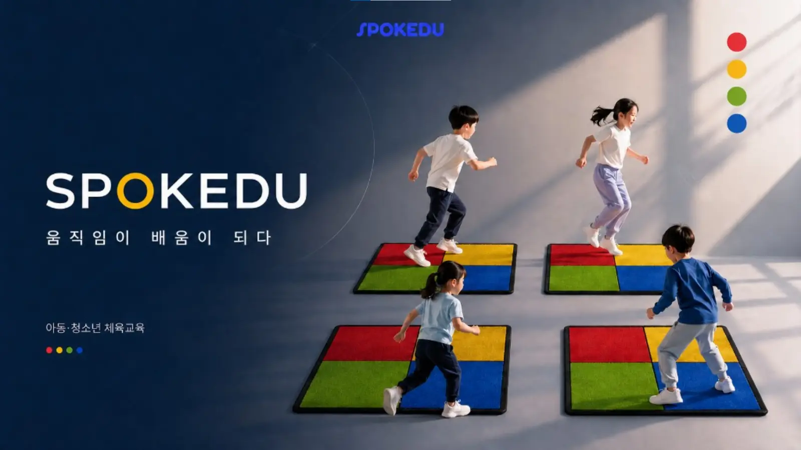
빨강·노랑·초록·파랑의 고정된 공간은 화면의 신호를 실제 발 위치로 연결합니다. 아이는 색을 맞히는 데서 끝나지 않고, 목표 위치를 선택해 이동하고 멈추며 다음 동작을 준비합니다.
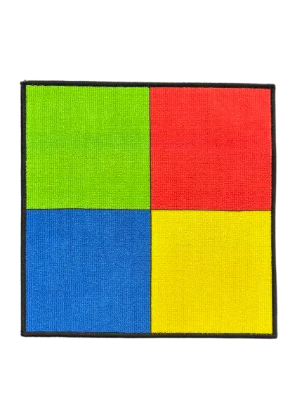
같은 패드 위에서도 화면에 무엇이, 어디에, 어떤 순서와 속도로 나타나는지에 따라 전혀 다른 신체활동이 만들어집니다.
SPOMOVE는 여러 게임을 단순히 모아 놓은 프로그램이 아닙니다. 하나의 자극에 바로 움직이는 단계부터 규칙·억제·기억이 필요한 과제와 몰입형 움직임까지 체계적으로 확장합니다.
하나의 자극을 보고 정해진 위치나 동작으로 즉시 연결합니다.
여러 자극과 방해 정보 속에서 필요한 목표를 골라 움직입니다.
규칙을 유지하고 익숙한 반응을 억제하며 순서를 기억해 수행합니다.
화면 속 공간 안에서 달리고, 점프하고, 피하며 전신으로 반응합니다.
선택·복합 반응에서는 색, 위치, 방향, 글자처럼 서로 다른 정보가 일치하거나 충돌하도록 설계합니다. 아이는 눈에 먼저 들어오는 정보에 그대로 반응하지 않고, 현재 규칙에 필요한 정보만 선택해 움직여야 합니다.
자극이 나타난 위치와 정답이 가리키는 위치가 다를 때, 눈에 보이는 위치로 바로 움직이려는 반응을 멈추고 색 규칙에 맞는 패드를 선택합니다.
반응 선택 · 공간정보 분리 · 자동 반응 억제가운데 목표 주변에 같은 색 또는 다른 색의 방해 자극을 함께 제시합니다. 주변 정보에 흔들리지 않고 중심 목표만 찾아 정확하게 움직입니다.
선택적 주의 · 방해 자극 통제 · 반응 정확성글자의 의미, 글자색, 화살표 방향처럼 서로 다른 정보가 충돌하도록 제시합니다. 그때 정해진 기준만 선택하고 익숙한 반응을 억제해 수행합니다.
규칙 유지 · 반응 억제 · 규칙 전환화면에서 정답을 찾는 것만으로는 끝나지 않습니다. 선택한 반응을 몸으로 정확히 실행해야 SPOMOVE의 과제가 완성됩니다.
움직인 뒤 정확한 위치에 멈추고, 다음 이동을 준비하며 몸을 조절합니다.
이동 · 정지 · 위치 조절 · 다음 동작 준비한 발 스텝, 양발 점프와 방향 전환 과정에서 착지와 무게중심을 조절합니다.
스텝 · 점프 · 방향 전환 · 착지 · 균형 조절화면 규칙과 공·풍선·컵·콘·후프·원마커·스카프·타격 도구를 연결해 손과 발의 움직임으로 확장합니다.
굴리기 · 던지기 · 옮기기 · 쌓기 · 치기 · 터치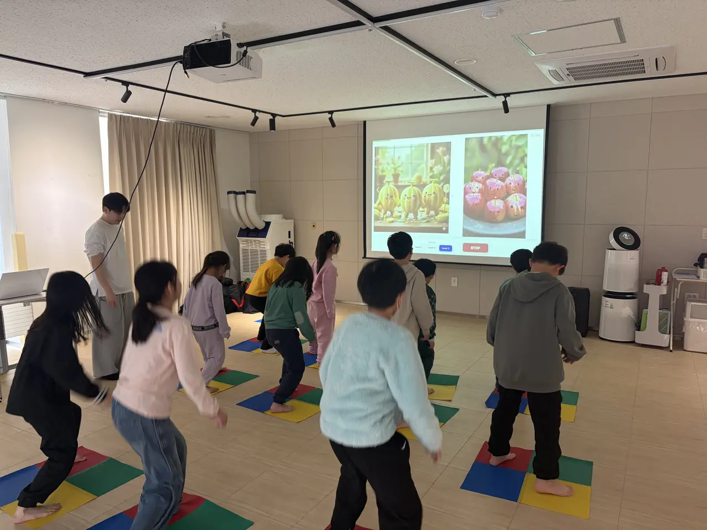
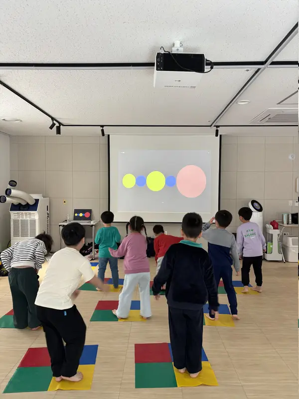
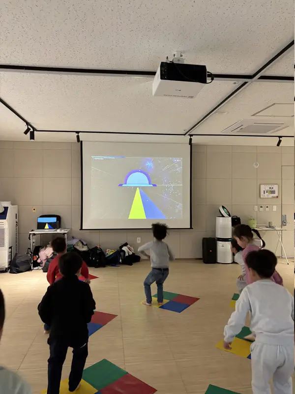
시지각 반응 안에서도 자극의 흐름, 등장 시간, 위치, 배열, 속도를 바꿔 다양한 콘텐츠를 구성합니다. 리듬게임처럼 반복하고 몰입하지만, 매 순간 몸으로 반응해야 합니다.
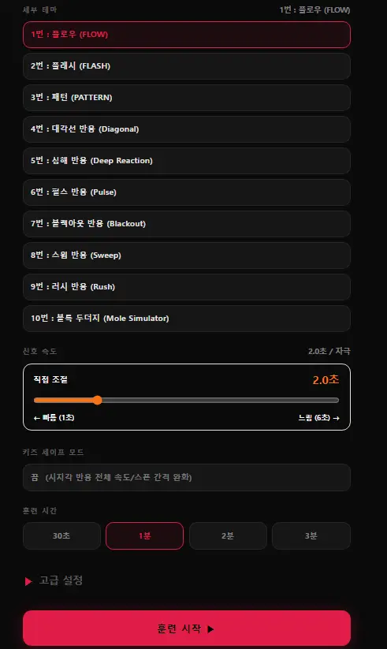
자극 속도, 훈련 시간, 등장 간격, 유아용 안전 모드 등을 조절해 같은 콘텐츠도 난이도를 다르게 운영할 수 있습니다.
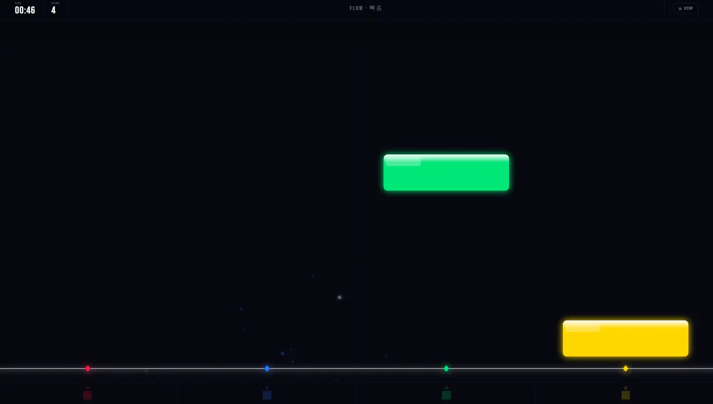
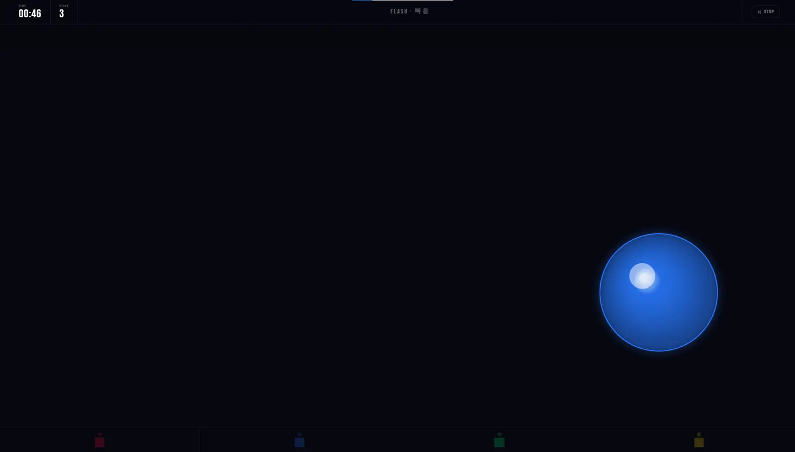
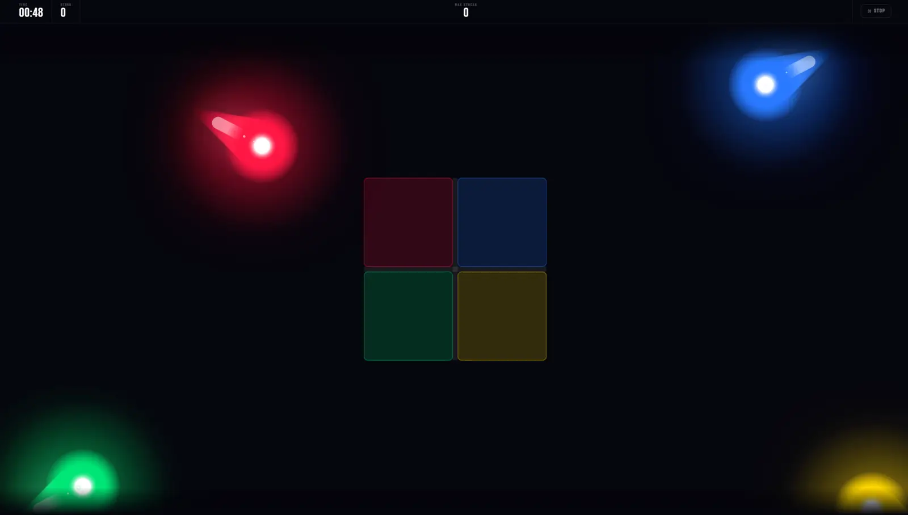
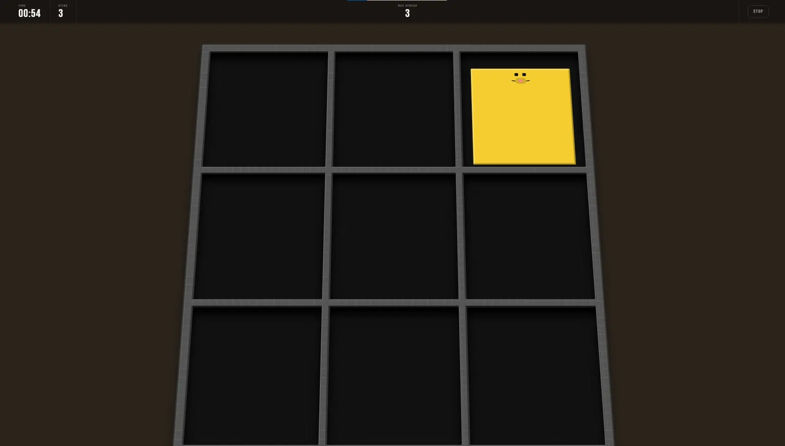
기본 반응 구조는 그대로 유지하면서 화면 표현과 움직임 과제를 바꿉니다. 그래서 한 번 익힌 규칙을 여러 형태의 신체활동으로 반복하고 확장할 수 있습니다.
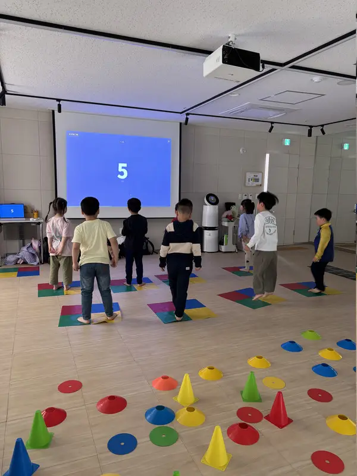
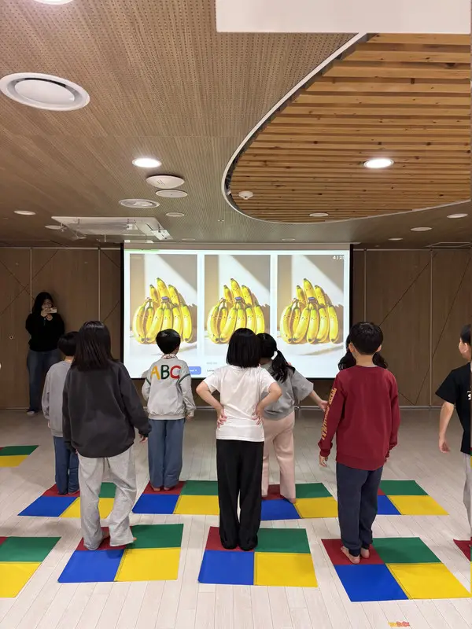
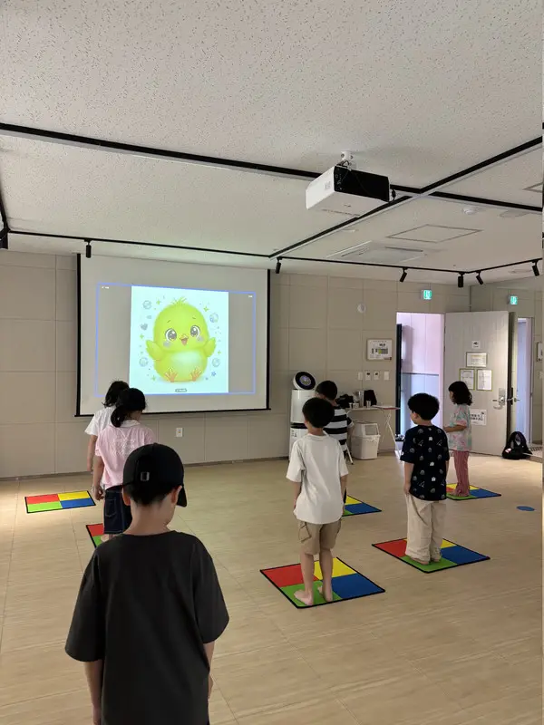
SPOMOVE는 제시 속도, 반복 횟수, 활동 시간, 자극 간격과 규칙의 수를 조절할 수 있습니다. 연령만으로 수업을 나누는 것이 아니라 참여자의 주의 지속 시간, 움직임 경험과 이해 수준에 맞춰 난이도를 설계합니다.
선명한 단일 자극과 충분한 반응 시간을 제공해 색 위치 찾기, 한 발 이동, 양발 점프, 멈추기와 교구 터치처럼 이해하기 쉬운 활동부터 시작합니다. 반복되는 성공 경험을 통해 화면을 따라 자연스럽게 몸을 움직이도록 유도합니다.
기본 움직임 · 성공 경험 · 자연스러운 참여빠른 템포와 복수 자극, 규칙 전환, 팀 대항과 교구 미션을 결합합니다. 사이먼 효과·플랭커·스트룹과 같은 선택 과제를 경쟁·협력 게임으로 확장해 고학년과 중학생도 충분한 몰입과 성취감을 경험하도록 구성합니다.
선택 반응 · 규칙 전환 · 도전과 성취구두 설명 중심의 일반적인 체육수업에서 참여가 어려웠던 아이들도 화면의 변화에 시선을 두고, 다음 자극을 기다리며, 이동·터치·점프와 같은 움직임을 스스로 표현하는 모습을 보였습니다.
화면의 테마와 표현 방식을 계속 바꾸면 새로운 자극에 대한 호기심이 이어지고, 반복되는 신체활동에도 비교적 오랜 시간 몰입하며 즐겁게 참여하는 모습이 현장에서 두드러졌습니다.
시선 집중 · 자발적 움직임 · 지속적인 참여※ 특수교육 대상 아동과 느린학습자에 관한 내용은 스포키듀 현장 수업에서 관찰한 참여 특성입니다. 개인의 발달 수준과 필요한 지원에 따라 반응은 다르게 나타날 수 있습니다.
스포키듀는 미취학부터 중학생까지 연령과 발달 수준에 맞춰 속도·시간·규칙·교구 활용을 조정합니다. 정규수업, 원데이 프로그램과 특수체육 등 기관의 대상과 환경에 맞는 SPOMOVE 수업을 설계합니다.
SPOKEDU
아동·청소년 체육교육 전문 브랜드
www.spokedu.com